はじめのかぞえかた
| ID | 問題 | 解説 | 輪郭 |
|---|---|---|---|
| geometry:count-intro:q01 |  | ||
| geometry:count-intro:q02 | |||
| geometry:count-intro:q03 |  | ||
| geometry:count-intro:q04 |  | ||
| geometry:count-intro:q05 |  |
| ID | 問題 | 解説 | 輪郭 |
|---|---|---|---|
| geometry:match-circle:q01 | 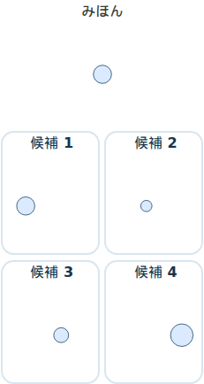 | 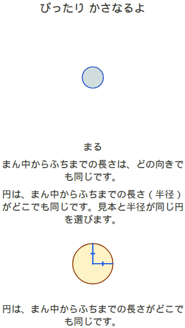 | |
| geometry:match-circle:q02 | 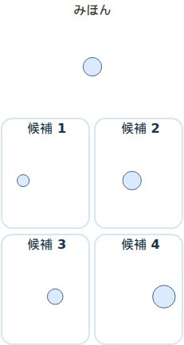 | ||
| geometry:match-circle:q03 | 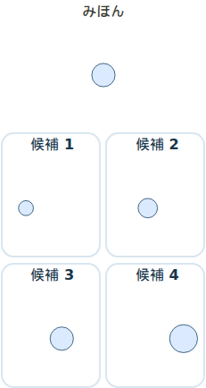 | 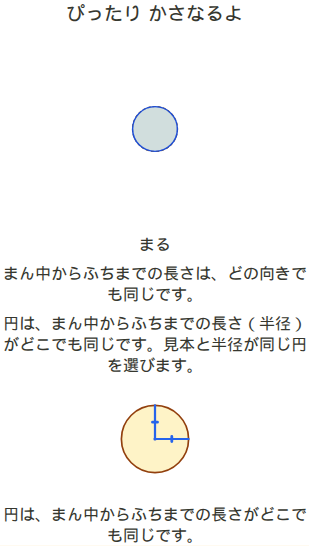 | |
| geometry:match-circle:q04 | 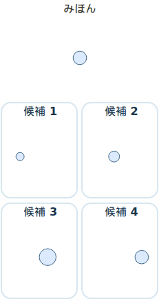 | ||
| geometry:match-circle:q05 | 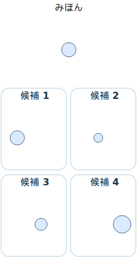 |
| ID | 問題 | 解説 | 輪郭 |
|---|---|---|---|
| geometry:match-square:q01 | 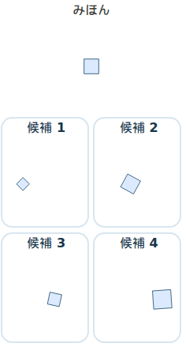 | 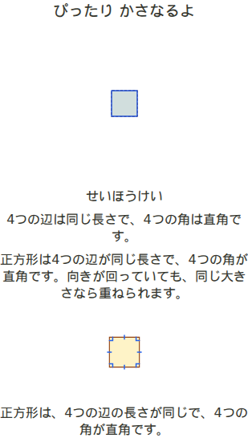 | |
| geometry:match-square:q02 | 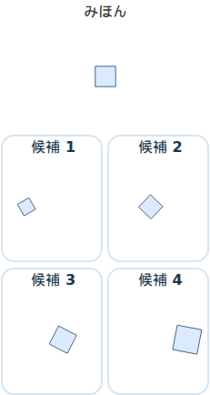 | 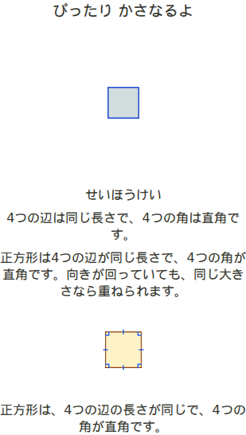 | |
| geometry:match-square:q03 | 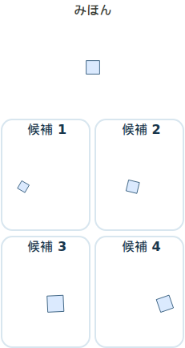 | 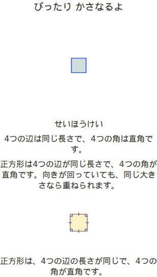 | |
| geometry:match-square:q04 | 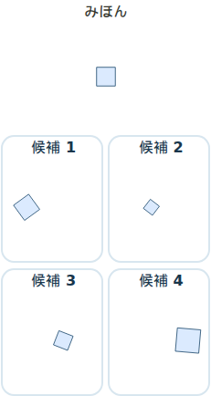 | 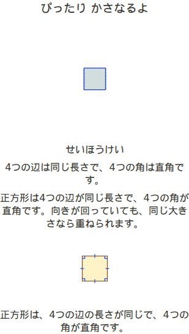 | |
| geometry:match-square:q05 | 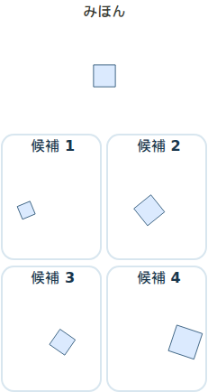 | 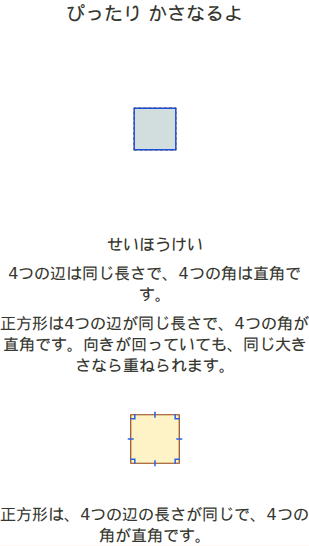 |
| ID | 問題 | 解説 | 輪郭 |
|---|---|---|---|
| geometry:match-rectangle:q01 | 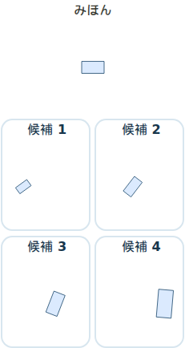 | 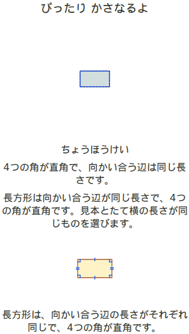 | |
| geometry:match-rectangle:q02 | 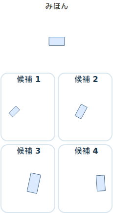 | 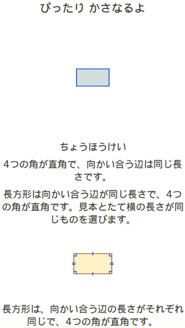 | |
| geometry:match-rectangle:q03 | 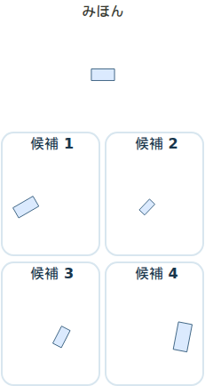 | 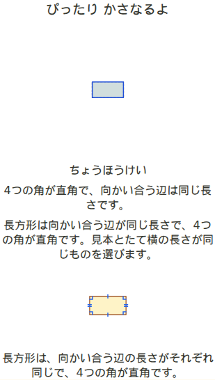 | |
| geometry:match-rectangle:q04 | 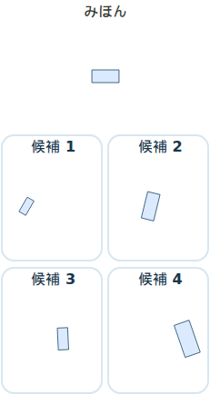 | 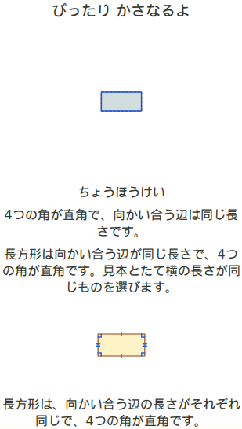 | |
| geometry:match-rectangle:q05 | 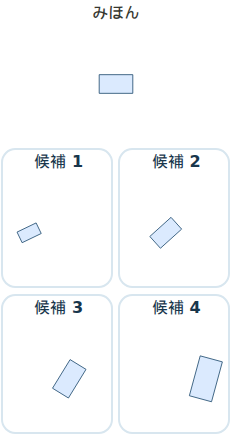 | 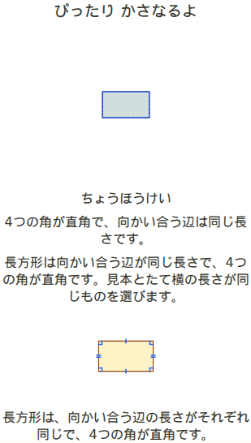 |
| ID | 問題 | 解説 | 輪郭 |
|---|---|---|---|
| geometry:match-equilateral:q01 | 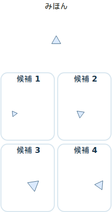 | ||
| geometry:match-equilateral:q02 | 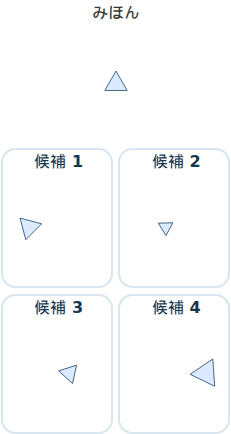 | 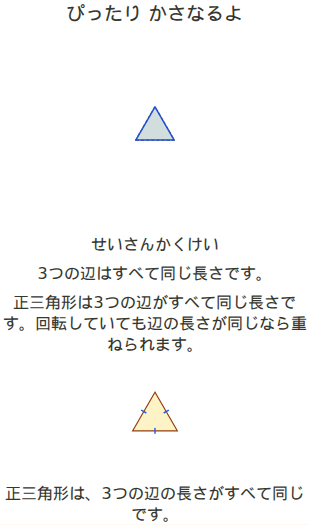 | |
| geometry:match-equilateral:q03 | 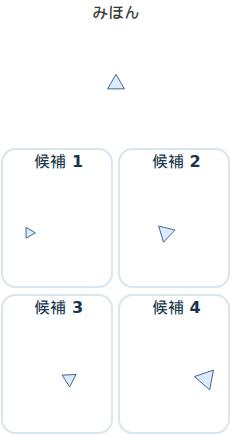 | 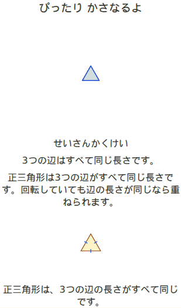 | |
| geometry:match-equilateral:q04 | 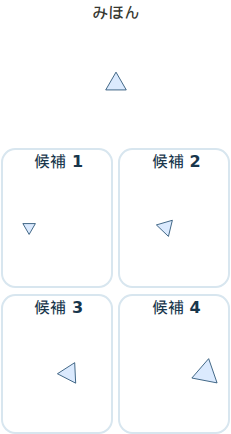 | ||
| geometry:match-equilateral:q05 | 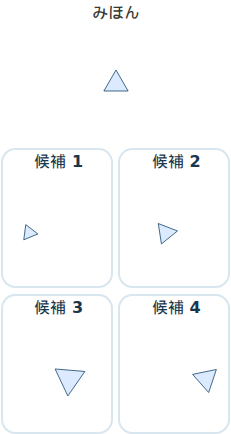 | 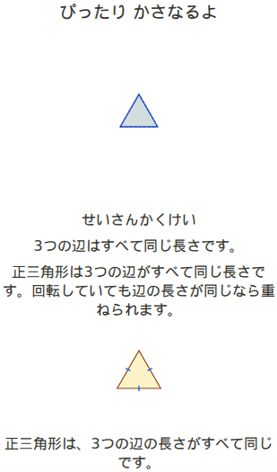 |
| ID | 問題 | 解説 | 輪郭 |
|---|---|---|---|
| geometry:match-isosceles:q01 | 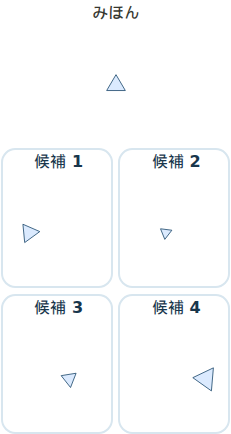 | 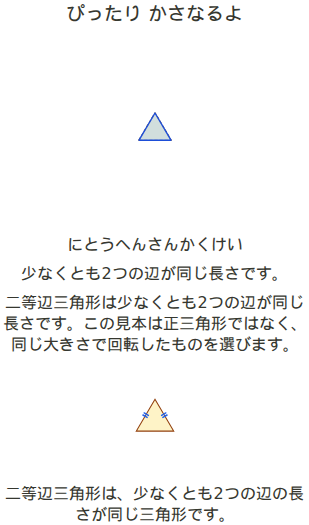 | |
| geometry:match-isosceles:q02 | 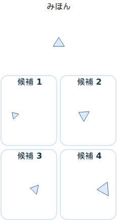 | 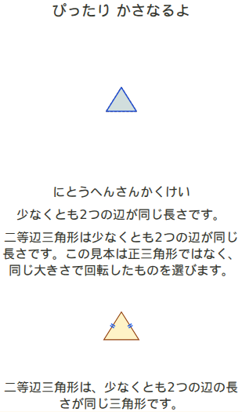 | |
| geometry:match-isosceles:q03 | 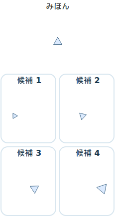 | 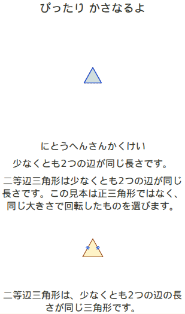 | |
| geometry:match-isosceles:q04 | 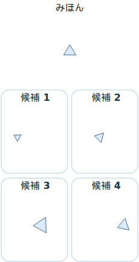 | 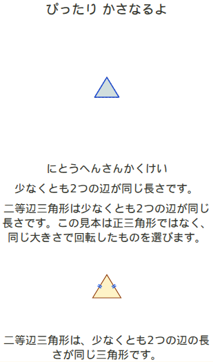 | |
| geometry:match-isosceles:q05 | 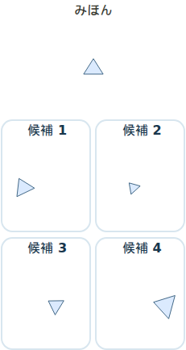 | 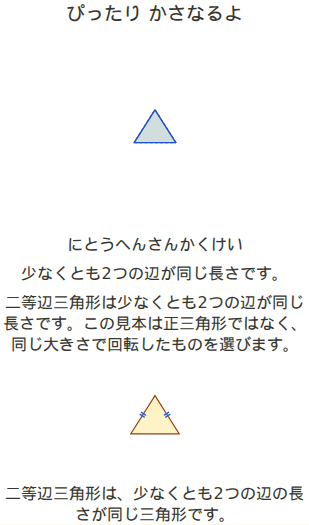 |
| ID | 問題 | 解説 | 輪郭 |
|---|---|---|---|
| geometry:match-right-triangle:q01 | 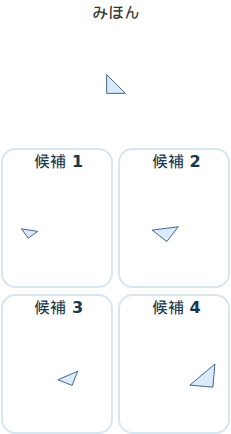 | 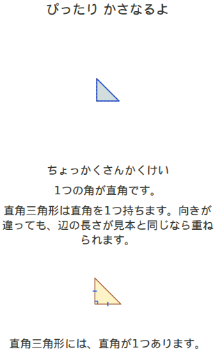 | |
| geometry:match-right-triangle:q02 | 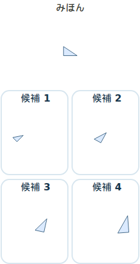 | 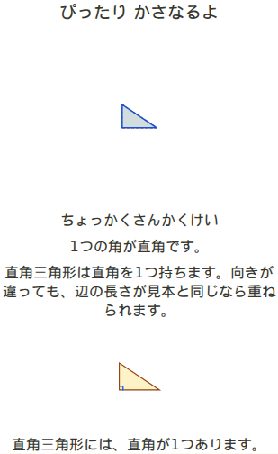 | |
| geometry:match-right-triangle:q03 | 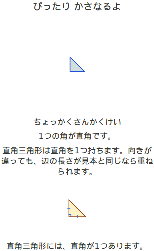 | ||
| geometry:match-right-triangle:q04 | |||
| geometry:match-right-triangle:q05 |
| ID | 問題 | 解説 | 輪郭 |
|---|---|---|---|
| geometry:count-intro:q01 | | ||
| geometry:count-intro:q02 | |||
| geometry:count-intro:q03 | | ||
| geometry:count-intro:q04 | | ||
| geometry:count-intro:q05 | |
| ID | 問題 | 解説 | 輪郭 |
|---|---|---|---|
| geometry:count-composite:q01 |  | ||
| geometry:count-composite:q02 |  | ||
| geometry:count-composite:q03 |  |  | |
| geometry:count-composite:q04 |  | ||
| geometry:count-composite:q05 |  |  |
| ID | 問題 | 解説 | 輪郭 |
|---|---|---|---|
| geometry:count-mixed:q01 |  |  | |
| geometry:count-mixed:q02 |  | ||
| geometry:count-mixed:q03 |  |  | |
| geometry:count-mixed:q04 |  |  | |
| geometry:count-mixed:q05 |  |